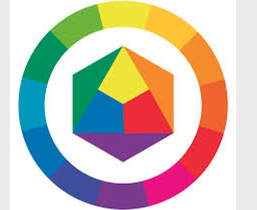
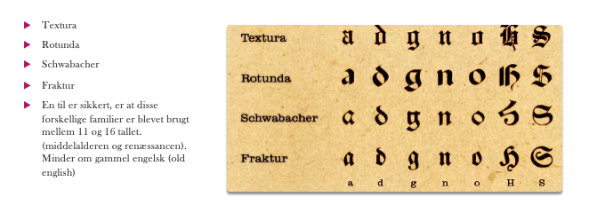
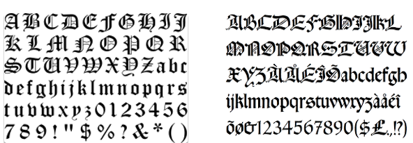

Dette er lidt om farver.
I gennem tiden har brugt farver, fx i gamle dage, der brugt man naturens egne farver til fx tøj. Man kan se når man ser på malerier eller billeder hvordan farverne er blevet brugt.I dag når man leger med farver, så kan man tage udgangspunkt i Ittens farvecirkel, da den er god til se hvilken placering den farve man har brugt ligge henne. Desuden så skal man også tænke over hvilke kontraster der fx i et maleri.
Når man maler, så benytter mange sig af at blande forskellige farver med hinanden, og det kan nogen gange skabe forviringn hos nogle mennesker.
Som menneske er man hurtigt om at danne en mening om noget som er baseret på udssendet. Det kan fx være når man møder et nyt menneske, ser nogte kunst eller ligende, kort sagt, hvis det er noget visuelt. Man kan som menneske have være sin opfattelse af hvad der er smukt, fx hvis man studere et mennesket om det er smukt eller ej. Om der er symmetri, eller harmoni og balance mellem højre og venstre side.
Det smukke gælder ikke kun objekter, men som multimediedesigner, så er der et behov for om interfacet er brugbart, som brugerne vil kunne forstå om hvordan det virker.

Dette er lidt historie om typografi
Der findes forskellige skrifttyper, og en måde at klassificere dem på er om de enten er serif eller san-serif. Det serif betyder er at skrifter er blevet forsynet med små vanrette fødder, som man kan se på bogtaverne. De seriffer der på nogle af bogstaverne er fra en tid hvor man skrev med blæk og pen.
I dag behøver man ikke at tage højde for den slags udfordringer for den skriveredskaber der bliver brugt idag, men det giver stadigvæk god mening at anvende disse seriffer.
Nogle af disse billeder kan være med til at fortælle om hilken slags typografi man førgen brugte, end det man gør i dag. Dette tekst er fra opgave omkring Blackletter, som var en af de første man brugte.


Det næste er san-serif, det betyder at skrift er uden fødder. Ofte er dey sådan at man vælger denne da de er god til et valg af korte tekstmængder, det er også fordi at hvis man skal forstå det man læser lidt bedre, så er det vigtigt at skriften er læsevenlig.
Inden for farver er der tre grundlæggende begreber som er man benytter sig af, de er kulør, intensitet og lyshed. Kulør en farves kulør, nogle gange også kaldet valør, som betyder hvilken farve der er tale om (rød,gul,blå osv), det vil sige farvecirklen. Det næste er intensitet, den beskriver for ren farven er, det der menes med renhed er fravær af hvid, sort eller grå. Den sidste er lyshed, dette indikerer i hvilken grad farven er lysere eller mørkere version af en bestemt kulør, det kan fx vær lyserød, mørkerød, lyseblå osv.
Når man taler om farver så taler man om farvecirklen, so består af tre primær farver og tre sekundærfarver.
Primærfarverne er rød, gul og blå og de danner så sekundærfarverne, grøn, orange og lilla. Når der er til daglig snak om varmer og kolde farver, så kommer det an på om de befinder inde i det rød-gule farvespektum eller befinder sig inden for de blå spektum.
Det næste er kontraster, det opstår når der er et modsætningsforhold mellem to farver, som fx lys/mørk eller kold/varm.
Farverharmoni, er der udvælges farver, som fungere rigtig godt sammen, så er det vigtig at farver på nogle mennesker får en subjektiv oplevelse, at nogen måske synes at rød er pæn mens andre ikke bryder sig om denne farve.
Farver der står over for hinanden i farvecirklen, bliver kaldt for komplenmentærfarver. Hvis farver er nabo, så bliver det kaldt for analog, da denne kombination giver et harmonisk udtryk. Den tredje er når der er lige stor afstand, bliver det kaldet for triadiske farver, fordi er der en forholdsvis en høj konstrast.